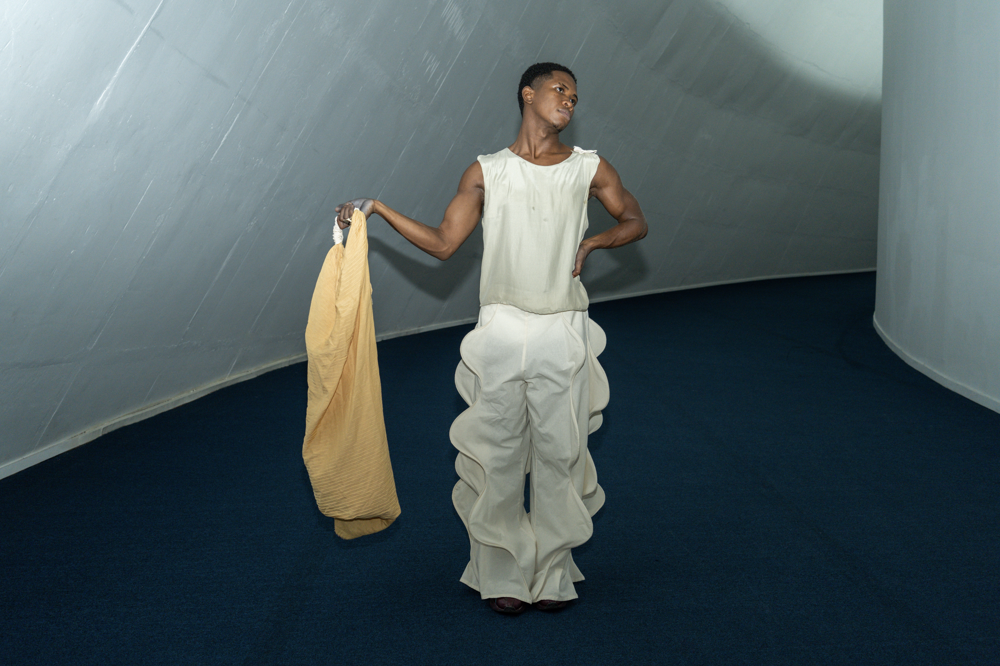
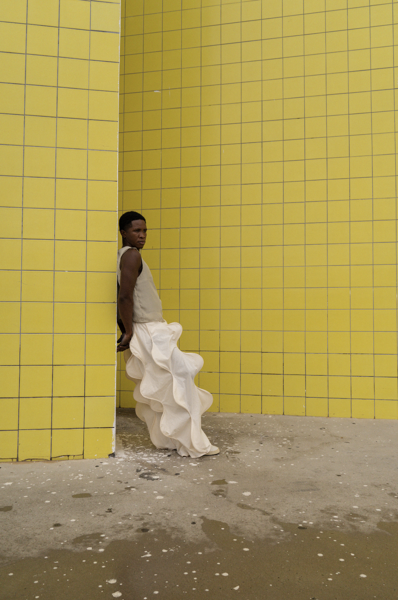
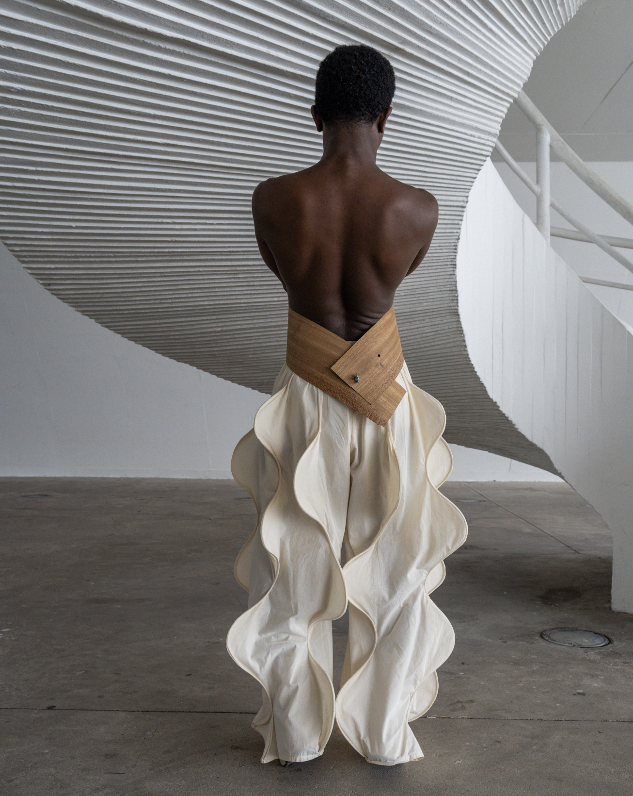
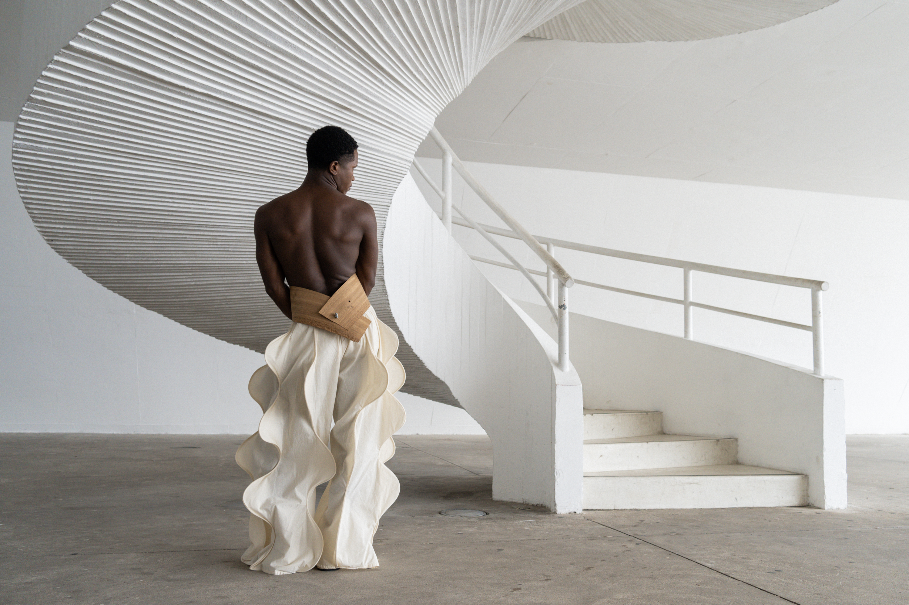
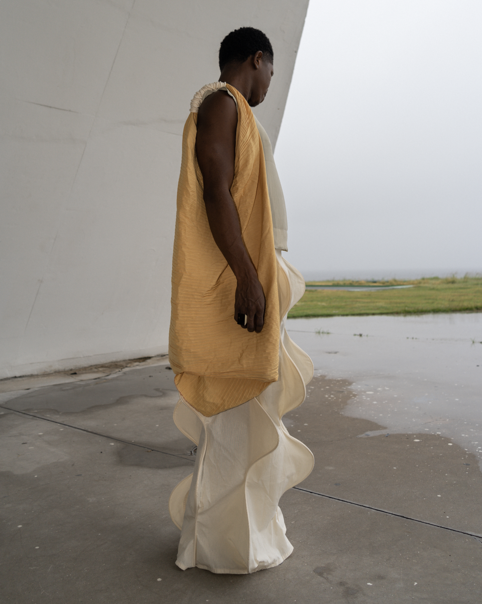
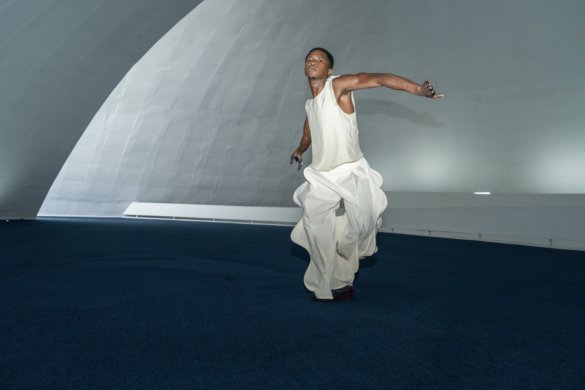
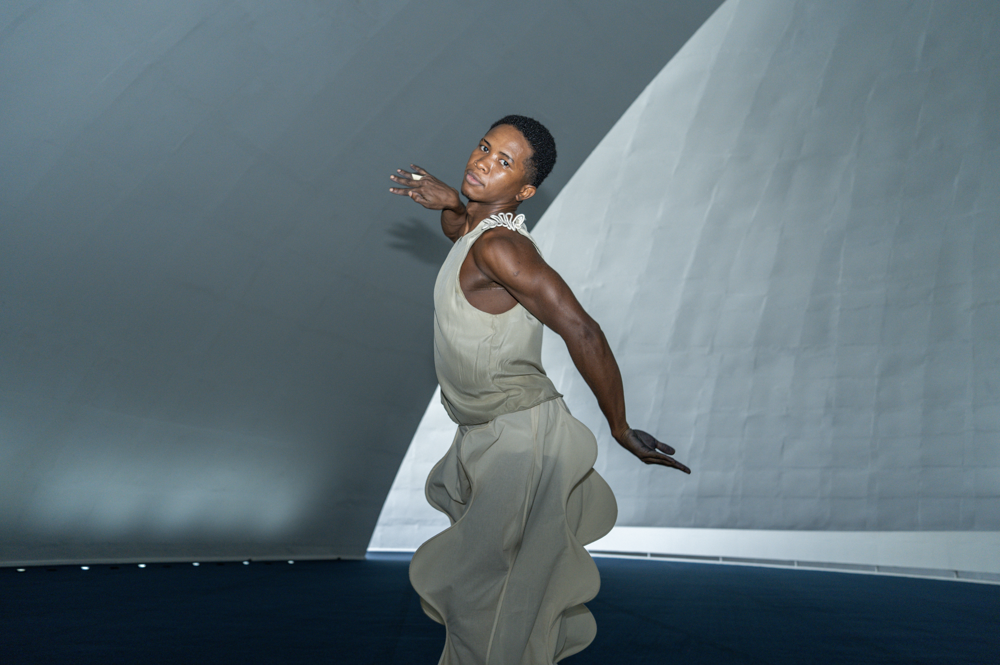
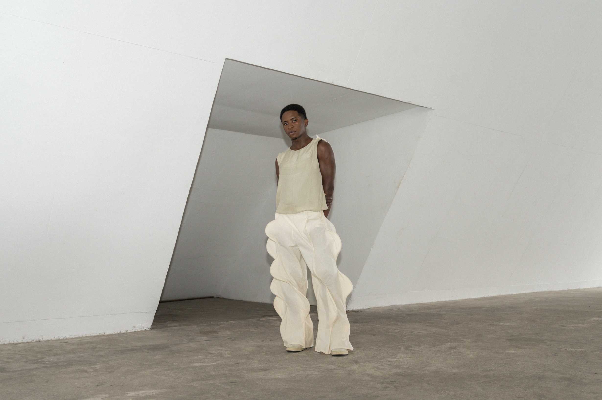
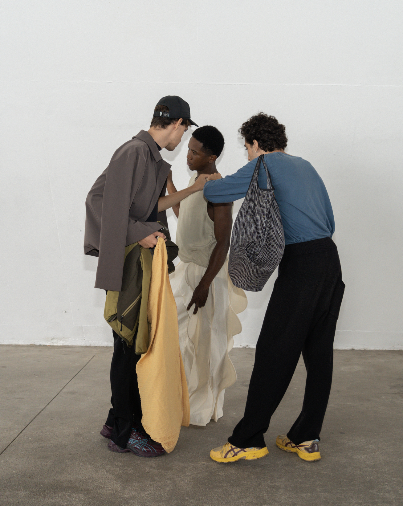
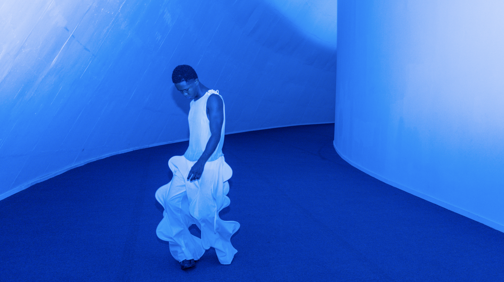

o rio flui
2023
O Rio Flui é um ensaio organizado pela Opus em colaboração com o fotógrafo nova-iorquino Brett Banducci durante sua passagem pelo Rio de Janeiro. as roupas são o ponto de partida de uma coleção sobre corpo e performance, que parte dos teatros e das óperas e encontra na curva sua forma essencial de expressão e reverberação. as peças são vestidas e performadas pelo artista visual Joelington Rios, ecoando a arquitetura de Oscar Niemeyer, maior expoente do modernismo brasileiro e conhecido por seu sinuoso trabalho plástico em concreto armado.
as fotografias foram realizadas em dois dos principais edifícios do Caminho Niemeyer: o Teatro Popular Oscar Niemeyer e a Fundação Oscar Niemeyer. o look completo é composto por três peças: a volumosa calça op.1 no.1, desenvolvida em 2021 e que só agora chega à sua forma final; a regata op.1 no. 2, confeccionada em seda pura de resgate industrial; e o protótipo de uma bolsa amarela plissada e opulenta, de proporções exageradas, também produzida a partir de tecidos remanescentes da indústria da moda.
ensaio em versão física publicado pela Drome Magazine, em Nova Iorque.










team
criação, direção, produção e styling
Breno Samel @brenosamel
Teo Bressane-Sabadin @teobressanesabadin
foto e edição
Brett Banducci @brettaworldpeace
modelo
Joelington Rios @rivers__________
publicação
Drome Magazine